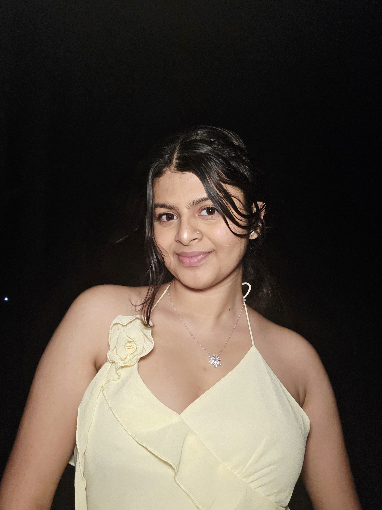

Materna
A meaningful project focused on maternal care, support, and accessible technology.

Pronita Ghimire
Hi, I am Pronita Ghimire, a Computer Science and Mathematics student at UAM and an aspiring software engineer. I enjoy building thoughtful projects, learning AI, and using technology to turn ideas into useful experiences. My work reflects both analytical problem-solving and creative curiosity, shaped by my interests in coding, dancing, research, and creative writing. I am still learning every day, but I care deeply about building with purpose, staying grounded, and growing into someone whose work is both intelligent and meaningful.
scroll
✦ Welcome to my world ✦
Student · Developer · Dreamer
A meaningful project focused on maternal care, support, and accessible technology.
A Tinder-style movie discovery app where users swipe left or right to find movies they like.
An interactive kids app designed to teach stories and lessons from the Bhagwat Gita in a fun way.
selected star
Fall 2025. A reminder that consistent effort, curiosity, and discipline can become something visible.
I like mathematics, logic, and DSA, so software engineering feels like a place where my mathematical brain can solve problems and turn ideas into something real.
I see AI as a powerful innovation when it is used thoughtfully. I want to learn how to build with it in a smart, useful way that supports development instead of just following trends.
I started with an interest in front-end design, but I want deeper, more useful knowledge too. Learning full stack helps me understand the whole app, not just the part people see.
I want to travel for joy, curiosity, and the chance to know local people and their stories. Seeing more of the world feels like another way of learning.
currently open
Dance gives me a different kind of discipline and expression. It connects movement, emotion, culture, and storytelling in a way that feels very natural to me.
Published in The Rising Nepal: a reflection on Kathak as meditation and a holistic approach to wellbeing.
Read the articleExploring how mesh networks of Python-based agents can respond to lateral malware through neighbor majority voting.
A hackathon project built around maternal care, thoughtful design, and practical support.